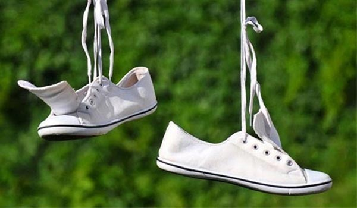

Cách khắc phục giày Vans trắng bị ố vàng sau khi giặt
12/01/2020
Với giày Vans trắng, tình trạng ố vàng sau khi giặt rất dễ xảy ra nếu bạn không nắm rõ cách giặt và phơi giày. Một số dung dịch tẩy rửa nếu bạn sử dụng sai sẽ khiến đôi giày Vans của bạn dễ bị ố vàng hơn. Hãy thử qua những cách sau để khắc phục đôi giày Vans trắng bị ố vàng sau khi giặt của mình nhé.
Sử dụng hỗn hợp baking soda: Đây được xem là bảo bối đánh bay nhiều vết bẩn cứng đầu được rất nhiều người yêu thích. Với những đôi giày Vans trắng bị ố vàng sau khi giặt bạn cũng có thể sử dụng để làm sạch các vết ố. Chỉ cần làm ướt vết ố và cho baking soda lên vết bẩn, chờ một lát và chải nhẹ. Sau đó bạn làm sạch lại bằng nước và đem đi phơi.

* Dùng nước cốt chanh: phương pháp này có thể sử dụng để thay cho baking soda nếu nhà bạn không có sắn. Đây cũng là một phương pháp khá dễ thực hiện nhưng cũng giúp tẩy sạch vết ố hiệu quả. Pha 1 phần nước chanh với 1 phần nước và dùng miếng mút xốp để thấm và chà lên vết ố. Sau đó dùng nước rửa sạch và đem phơi.
* Dùng kem đánh răng: Với cách này bạn chỉ có thể giải quyết những vết ố mới, chưa ăn sâu vào bề mặt vải thì mới có hiệu quả tuyệt đối. Còn những vết ố quá nặng thì cũng khó loại bỏ được hoàn toàn. Nhưng với cách này cũng khá được nhiều bạn sử dụng trong việc vệ sinh giày.
* Dùng dung dịch vệ sinh giày chuyên dụng: Phương pháp tuy có hơi tốn tiền hơn nhưng lại đem lại hiệu quả cực cao trong việc tẩy trắng những vết ố vàng. Với những dung dịch vệ sinh chuyên dụng này, đôi giày Vans trắng của bạn sẽ không lo bị hư hại mà vẫn có hiệu quả làm sạch rất cao.
*
Lưu ý : cho các bạn để hạn chế tình trạng giày Vans trắng bị ố vàng sau khi giặt thì mọi người nên bọc một lớp giấy ăn lên giày và cả bên trong giày. Làm như vậy sẽ giúp khăn giấy hút được những chất tẩy rửa còn xót lại trên bề mặt giày, ngăn chặn được hình thành các vệt ố vàng. Ngoài ra, đừng quên phơi giày ở chỗ thoáng mát, tránh ánh nắng trực tiếp quá mạnh. Nếu phơi nắng mặt trời quá lâu sẽ dễ gây ra tình trạng phần đế cao su bị ngả vàng và giòn, gây hư tổn.